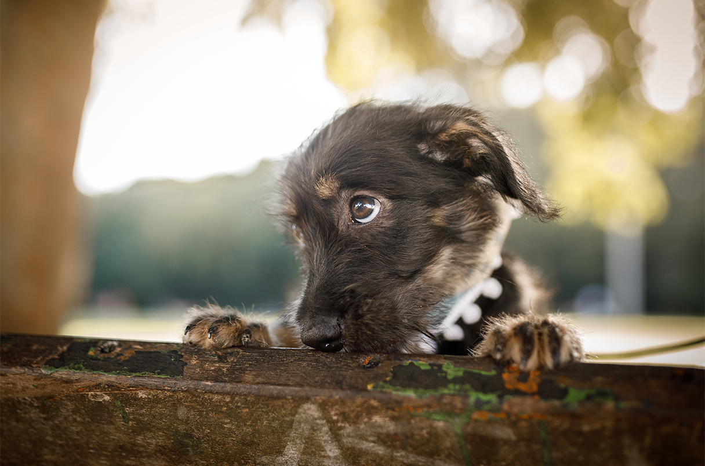
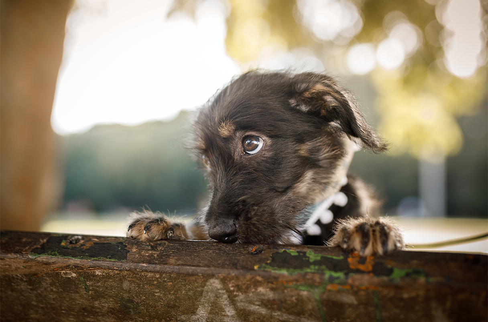

HTML 2 dalis namų darbai
pirkinių sąrašas:
- batonas
- obuoliai
- cukrus
- arbata
- pipirai
- ausinukai
Tinklapių kūrimas:
- Frontend, naudojamos technologijos:
- HTML
- CSS
- JavaScript, galima naudoti šiuos karkasus:
- Backend: galima rinktis norimą technologiją
- Duomenų bazės, galima rinktis norimą:
 
